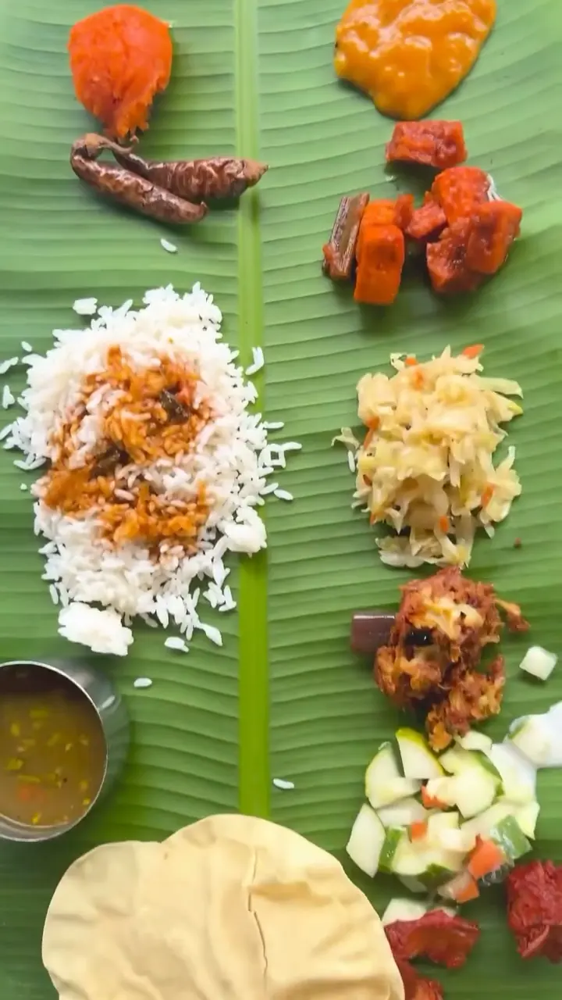
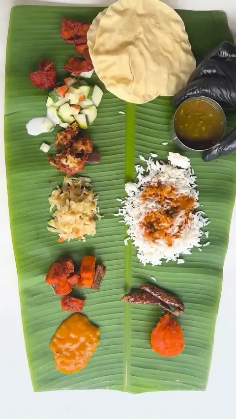

வாழை இலை விருந்து · the banana-leaf feast
The Leaf
Ponni rice at the centre, two vegetables on the right, then fried chicken or fish, papadam, lime pickle, sour chilli and mango chutney, and six curries poured over, one after another. Rasam comes to cleanse. Refills come until you fold the leaf toward you.
See the sets